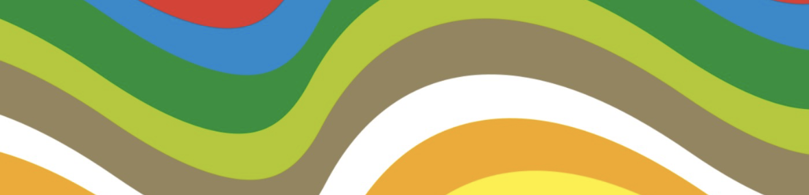

Colour with purpose
Vivid accents. Deliberate combinations.
A house style for Alan O Cinneide Software.
Optimistic colour. Order with a little movement.
A little retro.
A lot of forward.
Flowing colour. Clear structure. Inspired by Munich ’72, Moscow ’80 and the original business card.
Vivid accents. Deliberate combinations.
Clear grids. Generous margins.
Smooth movement. Then stillness.
An optimistic spectrum.
Grounded by quieter tones.
From the original artwork, converted to sRGB. Click to copy.
Ink with lime, yellow or orange. The full spectrum belongs in the bands.
Ink on light. White on ink. Other colours are graphic accents.
Ideas take
shape.
Give ideas room to breathe. Make the useful thing easy to find.
Broad curves. Flat colours. Crop beyond the edge.
Keep text on a quiet surface.

The original PNG is preserved with its Display P3 profile. The SVG above is a new interpretation, not a recovered print file.
Download original PNG ↓Ideas in motion.
Change a control. Feel it respond.
One pass, 1.8 seconds. Never an endless loop.
Gym Circuit Logger: native range control, colour settling and sliding panels. Mise en Place: quick button response. Reinterpreted in this house style.
From a first impression
to a bigger picture.
Proposed compositions. Ready for your feedback.
A place for clear thinking, creative problem-solving and software made with care.
Explore the work65 × 65 mm / Kraft stock reference
New concept. Print colour and paper need proofing.
A system to build on.
And make your own.
A working proposal. Try it, use it, tell us what to change.
Give design feedback